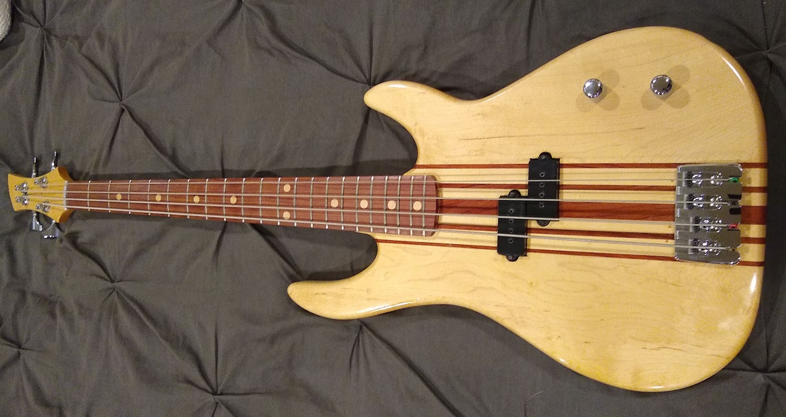

A few years ago, a friend of mine - I’ll call him ‘CalFrog’ - challenged me to build a bass guitar. The end result was the short-scale bass shown below. Since then, I’ve made a couple more instruments and it seemed like it would be good to capture the process that goes into making something like this. This is how I do it, based on the tools I have available and the techniques that I’m comfortable with. Clearly, there’s more than one possible way to end up in a similar place, but I feel reasonably confident that I’ll end up with something usable doing it this way.

The guitar, like any musical instrument, is the sum of its parts. In order to make something that is both playable and maintainable, decisions must be made regarding the size, shape and configuration of the instrument. Almost all of these choices affect some aspect of playability and how different parts of the intrument interact with each other. There are very few things on the guitar which only have an aesthetic effect when changed.
Here are the main items to think about before starting construction.
Let’s go through each of these, individually, below.
Seems self-evident, but since you’re building it, there are no limits. Case in point, I’ve been playing a 5-string, baritone scale guitar that I made for myself a few years ago. You can make an 8-string bass, 4-string mandolin, etc. The point is that you need to know what you’re making. Some of the parts you need to buy are not interchangeable between different types of instruments. Specifically the tuners, bridge and/or tailpiece need to match the style of instrument and the string gauge that you’re working with. To a lesser extent, the same thing is true of the pickups, although in some cases the same pickup will work in either a guitar or bass.
By this I mean “body construction”, not so much the shape. There are some ramifications from choosing a specific shape that I’ll go over briefly, but the construction of the body is more important. The main choices are solid-body, semi-hollow and hollow-body and I should specify that I am only talking about steel-string electric guitars/basses here. Fully acoustic guitars like a Martin dreadnought or nylon-string Classical guitar are something entirely different.
The 3 body types - solid, semi-hollow and hollow - differ by the amount of air space in the body. The Gibson Les Paul and Fender Stratocaster are both examples of solid-body guitars. Essentially they’re a slab of wood that cut into the shape of a guitar that then has a neck attached to it. The semi-hollow body is like a Gibson ES-335, or Epiphone Sheraton (essentially the same guitar) and is a hollow body with a large block of wood in the center.